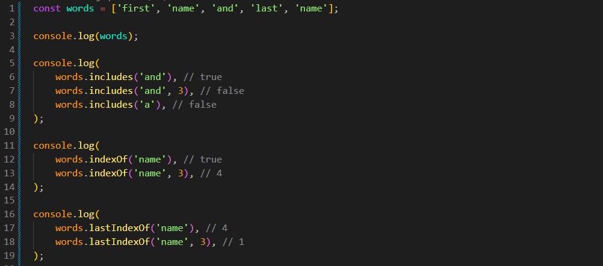
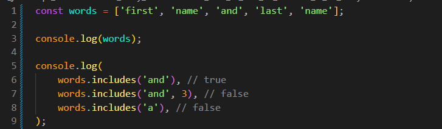
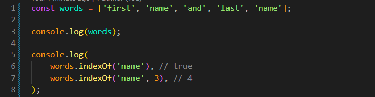
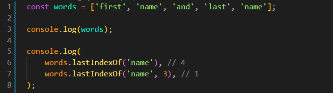

How to find an element in an array
Intro
Agora iremos vamos ver os metodos que nos permitem verificar a presenca de um elemento em um array.
Semelheante a cadeia de caracteres podemos usar um metodo includes.
Agora iremos vamos ver os metodos que nos permitem verificar a presenca de um elemento em um array.
Semelheante a cadeia de caracteres podemos usar um metodo includes.
JS:

Retorna verdadeiro se o elemento estiver presente no array. Podemos estar utilizando da seguinte forma:

Podemos observar que com includes, podemos estar verificando se uma palavra chave, possui dentro de nosso array, se existir nos retorna true se nao false, podemos passar 2 parametros, a palavra desejada e a partir de onde ira comecar como por exemplo words.includes('and', 3), ira buscar a palavra and a partir do indice 3.
No includes(a), por mais que tenhamos a em nosso array, ele nao é encontrado pois ele busca exclusivamente essa palavra separada das demais. includes verifica apenas a correspondencia exata do parametro passado.
Funciona de forma semelheante ao includes, porem ele nos retorna ao inves de true ou false, o indice onde foi encontrado o parametro passado. Nele tambem podemos passar de onde iniciar a pesquisa. Formas de uso:

Identico ao indexOf(), porem inicia a busca do final para o incio. Ex:
